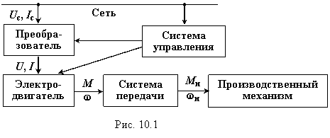

10.1.1. Назначение и структура электроприводов
Электроприводом называют электромеханическое устройство, осуществляющее преобразование электрической энергии в механическую и обеспечивающее электрическое управление механической энергией.>
Производственные машины и механизмы, как правило, приводятся
в движение с помощью электрических приводов, включающих в себя преобразователи
(трансформаторы, электромашинные усилители, тиристорные преобразователи
напряжения и частоты и др.), электрические двигатели, системы передачи (червячные,
зубчатые и другие механизмы для согласования вращающего момента М и
частоты вращения ω соответствующего двигателя с вращающим моментом Mн и частотой вращения ωн конкретного производственного механизма (рис. 10.1)) и аппаратуру управления.

Если включение, управление работой и выключение электропривода, например, одиночного насоса, компрессора и т. д. выполняется человеком, то такой электропривод называют неавтоматизированным. В автоматизированном электроприводе человек принимает участие только во включении и выключении привода и в наблюдении за функционированием системы управления производственным механизмом.
Выбор рода тока и величины питающего напряжения приводного двигателя зависит от ряда факторов, часто противоречащих друг другу. Обратим внимание на такие наиболее важные факторы как:
• требуемые моменты и мощности при пуске и во время
работы,
• частота вращения двигателя и передаточные числа
кинематических звеньев,
• возможность регулирования и реверсирования частоты вращения двигателя,
• КПД двигателя, возможности перегрузки, нагрев,
• броски тока,
• надёжность его эксплуатации и затраты на приобретение и эксплуатацию и т. д.
В частности, выбор электродвигателей постоянного тока в системе электропривода обуславливается необходимостью регулирования частоты вращения производственного механизма. В дальнейшем будут рассмотрены лишь важнейшие вопросы нагрева и охлаждения двигателей и выбор двигателя по заданной нагрузке производственного механизма.